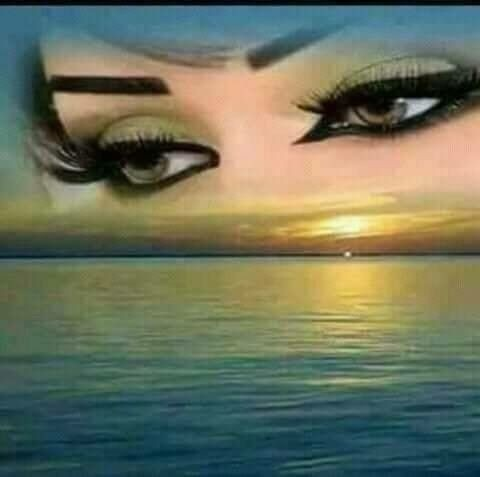

PROJETO 5º ELEMENTO
Sintetizador Biométrico de Lágrimas

Gratidão
Dor da Alma
Tristeza
Alegria
Paz
Raiva
GRATIDÃO: O olhar foca a beleza do encontro. Alta carga de oxitocina, dopamina e reconhecimento da vida.